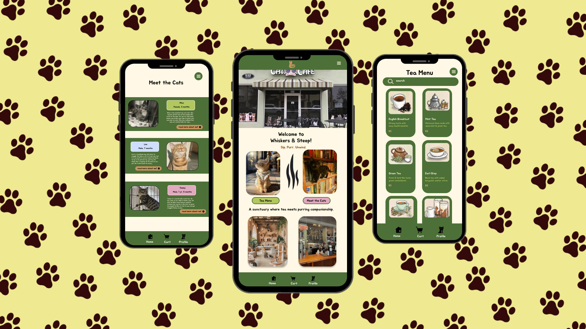

The Problem:
Finding adoptable cats or nearby cat cafés isn’t always easy or centralized. Information is often spread across different websites, making the process feel overwhelming or disconnected.
At the same time, many adoption platforms lack personality and emotional connection, which can make the experience feel transactional rather than meaningful.
The Goal:
Design a mobile app that:
* Makes it easy to discover cat cafés and adoptable cats nearby
* Creates an emotional, cozy, and inviting experience
* Simplifies the browsing and discovery process
* Encourages users to engage with adoption in a more approachable way
Solution
I designed Whiskers & Steep as a swipe-based, visually engaging app that allows users to explore adoptable cats in a simple and intuitive way.
The app combines:
* A clean, easy-to-use interface
* A warm, cozy visual identity
* A discovery-focused experience inspired by familiar interaction patterns
This creates a balance between usability and personality.
My Role
UX/UI Designer
Team
Solo project
Timeline
4–6 weeks
Tools
Figma